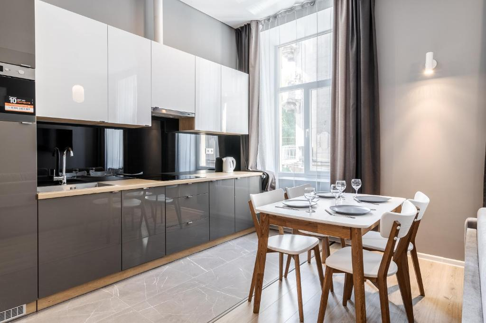
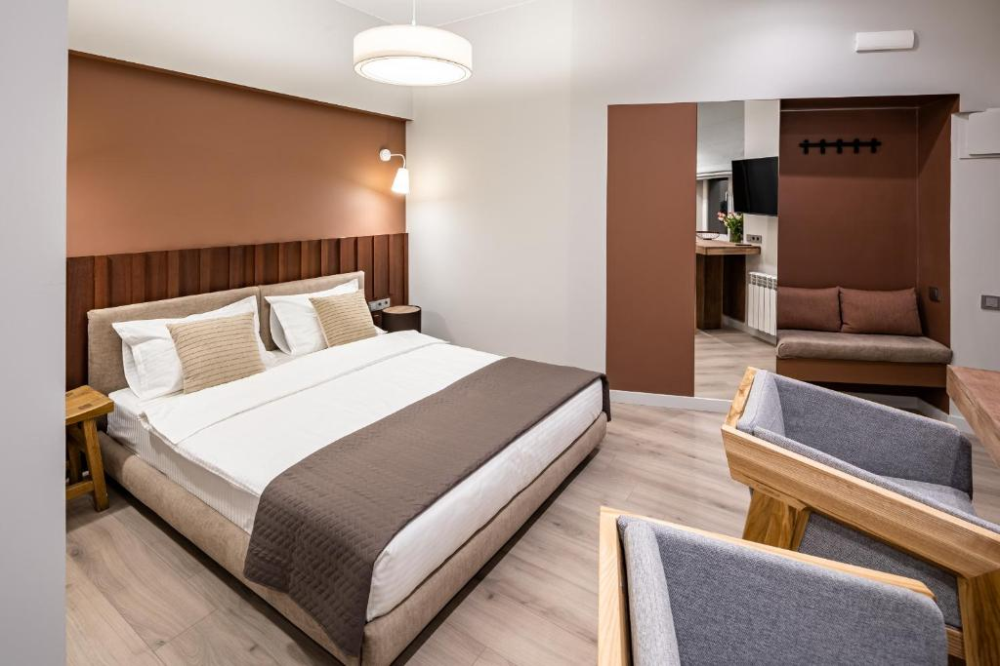
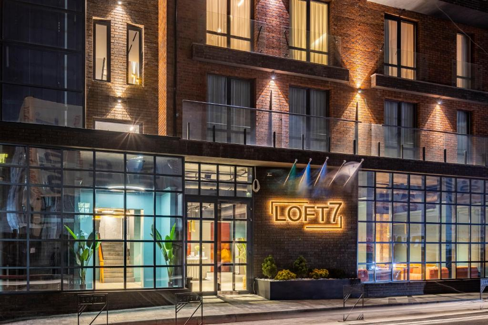
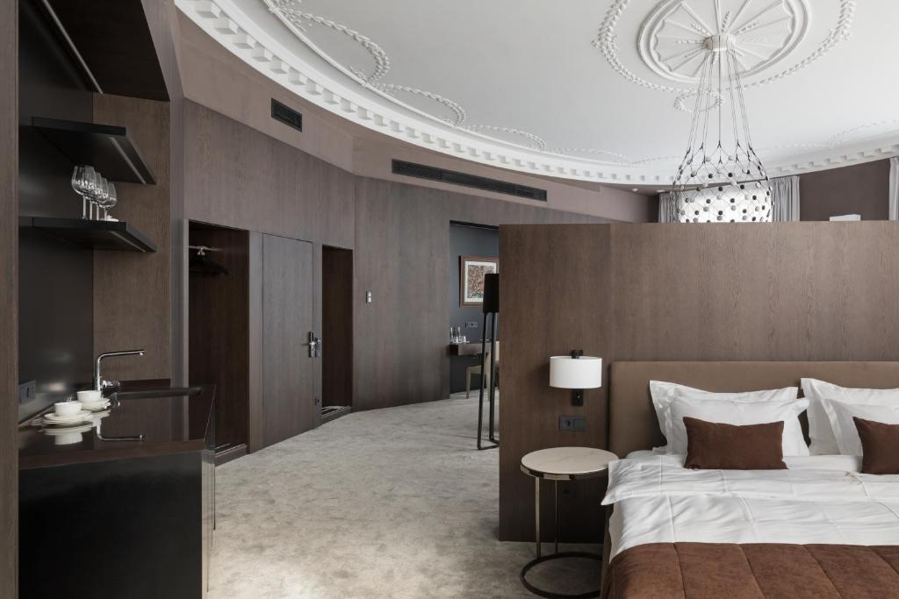
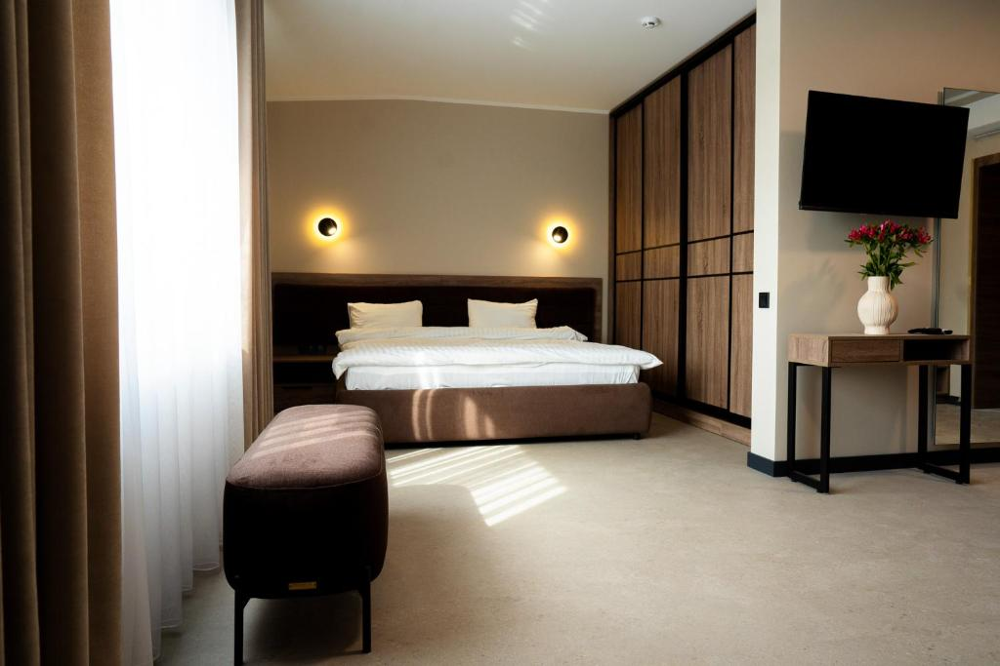

Львів чекає на тебе — бронюй найкращий готель вже сьогодні!

InshiApartments on Popovycha
InshiApartments on Popovycha розташований у центрі Львова, поруч із пам’ятниками Володимиру Івасюку. До послуг гостей – безкоштовний Wi-Fi, кондиціонер, духовка й чайник. Помешкання розміщене менш ніж за 1 км від Площі Ринок. Працівники стійки реєстрації володіють різними мовами.
Детальніше
MONTENEL Apartel
Для зручності гостей помешкання MONTENEL Apartel, розміщеного за 500 м від центру міста Львів, номери з безкоштовним Wi-Fi та кухнею з холодильником, мікрохвильовою піччю та плитою.Певні варіанти розміщення мають терасу та/або балкон з чудовим видом на місто.Поруч із помешканням розміщені такі популярні визначні пам'ятки.
Детальніше
LOFT7
Помешкання Loft7 вдало розміщено в місті Львів. До розпорядження гостей номери з кондиціонером і безкоштовним Wi-Fi, безкоштовна приватна парковка та обслуговування номерів. У помешканні до розпорядження гостей цілодобова стійка реєстрації і ресторан. У помешканні Loft7 усі номери устатковані шафою. У помешканні Loft7 усі номери мають окрему ванну.
Детальніше
Old City Apartments
Гостям пропонують варіанти розміщення з повністю обладнаною кухнею з обіднім столом та телевізором із плоским екраном із супутниковими каналами. Окрему ванну кімнату з душем укомплектовано безкоштовними туалетно-косметичними засобами і феном. Певні варіанти розміщення мають терасу та/або балкон з чудовим видом на місто.
Детальніше
MyAparts R2
Помешкання MyAparts R2 розташовано у серці міста Львів, поруч із пам'яткою "Латинський кафедральний собор" та з пам'яткою "Площа Ринок". До послуг гостей безкоштовний Wi-Fi, кондиціонер і такі зручності, як плита та чайник. Помешкання розташовано за 2 хв. ходьби від пам'ятки "Палац вірменських архієпископів" і за кілька кроків від пам'ятки "Палац Бандінеллі".
Детальніше
Jam Apartments Miskevycha
У кожному номері встановлено кондиціонер та телевізор із плоским екраном. До розпорядження гостей також повністю обладнана міні-кухня. Окрему ванну кімнату з біде укомплектовано безкоштовними туалетно-косметичними засобами і феном. Тут також для зручності гостей є холодильник, мікрохвильова піч, плита та чайник.
Детальніше
BANKHOTEL
Помешкання BANKHOTEL розміщено в центрі міста Львів, за кілька кроків від пам'ятки. До розпорядження гостей фітнес-центр, сад та тераса. До розпорядження гостей помешкання ресторан та бар. Для зручності гостей цілодобова стійка реєстрації, трансфер з/до аеропорту, обслуговування номерів та безкоштовний Wi-Fi на всій території помешкання.
Детальніше
Equicor
У помешканні Equicor кожен номер укомплектовано шафою, телевізором із плоским екраном, окремою ванною кімнатою, постільною білизною та рушниками. У помешканні кожен номер устаткований чайником, а певні номери також облаштовані міні-кухнею з мікрохвильовою піччю. У помешканні усі варіанти розміщення оснащено холодильником.
Детальніше